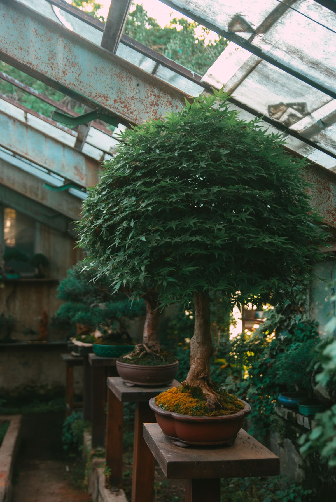

About & care
Grown slowly, in the open, in Boskoop
Boskoop has grown trees in rows for five hundred years — avenue trees, roses, conifers for half of Europe. My bench is one glasshouse at the end of a nursery lane, and everything I sell was grown on it, in the weather, where you can come and see it.
How I got here
I am Maarten Dekker, fifty-one, third generation on this lane — my grandfather grew avenue trees, my father grew roses, and I grow trees that fit on a table. From 2009 to 2012 I apprenticed in Omiya, Japan, sweeping a famous garden's floors for a year before I was allowed to wire a branch. What I brought home was not a style. It was a discipline: the tree decides the pace, and the grower's whole job is to be there, on time, for twenty years.
Back in Boskoop I specialised in the shallow bowl — what the Japanese exhibitions call a moss ball's tidier cousin: one tree, a low wide bowl, roots spread flat, the soil surface finished with living moss so the bowl reads as a small piece of ground. It is the hardest format to keep alive and the easiest to love, which is why this page spends as long on care as on selling.
The moss is grown, never glued
The green surface is the signature of these bowls, and it is alive or it is nothing. I use three mosses, each for a reason:
- Cushion moss (Leucobryum) — the pale, domed cushions on the maple and the elm. Slow, dense, and the most forgiving under a tree's shade.
- Sheet moss (Hypnum) — a flat, fine carpet for the cotoneaster, where berries need to fall on something soft-looking.
- Sidewalk moss (Bryum) — the tough one, used in the seams and edges where feet and watering cans do their damage.
All three are grown here on trays, harvested in patches each spring, and pressed onto fresh akadama at repotting. Moss is a dressing, not a soil — it sits on top of the akadama and does the work of a forest floor: shading the roots, holding the surface, telling you at a glance whether the bowl is moist. Keeping it alive indoors is the one skill I insist on teaching before a bowl leaves: bright light, a daily misting, and the understanding that moss sleeps dry and wakes wet — a dry week browns it, a wet week revives it, and only a dark room kills it.
Watering by weight
Forget schedules. A shallow bowl in June sun and the same bowl in November gloom are different animals. Every bowl I sell leaves with a card: its weight just watered, and its weight ready for water — for a 24 cm bowl, typically about 180 grams of difference, which your hand learns in a fortnight and a kitchen scale confirms in a second. Lift the bowl. If it feels light, water it through, twice, until it runs from the hole. If it feels heavy, put it down. That is the whole method, and it has kept office trees alive for years at a time.
The drainage truth
Here it is plainly, because gift shops will not tell you: a bowl without a drainage hole is a swamp with a tree in it. Roots standing in water rot in weeks, and the tree dies from the bottom while the top still looks green. Every bowl on my bench is drilled, the hole is meshed against soil loss, and the tree sits on a coarse bottom layer of akadama so water leaves fast. If you fall in love with a decorative bowl that has no hole, use it as a cachepot — an outer sleeve — and keep the tree in its own drilled bowl inside it. Never plant directly into a sealed bowl, whatever the label promises.
Repotting, and why spring
Roots are pruned and soil renewed every two to three years, in the repotting weeks from late February, just before the buds break — the one moment a tree can lose a third of its roots and thank you by Easter. That single fact shapes this whole business: commissions are potted in March, moss knits by May, and no honest grower will start you a tree in October and promise it for Christmas.
